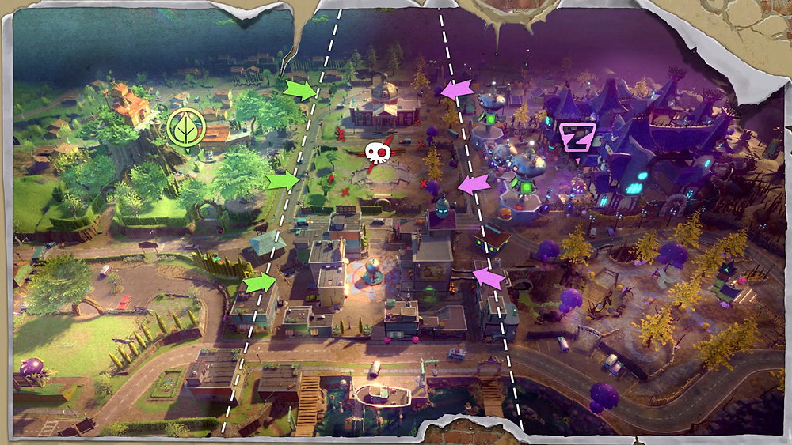
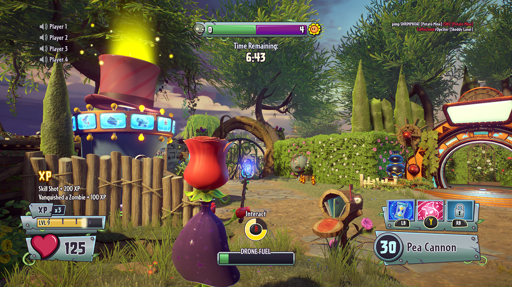
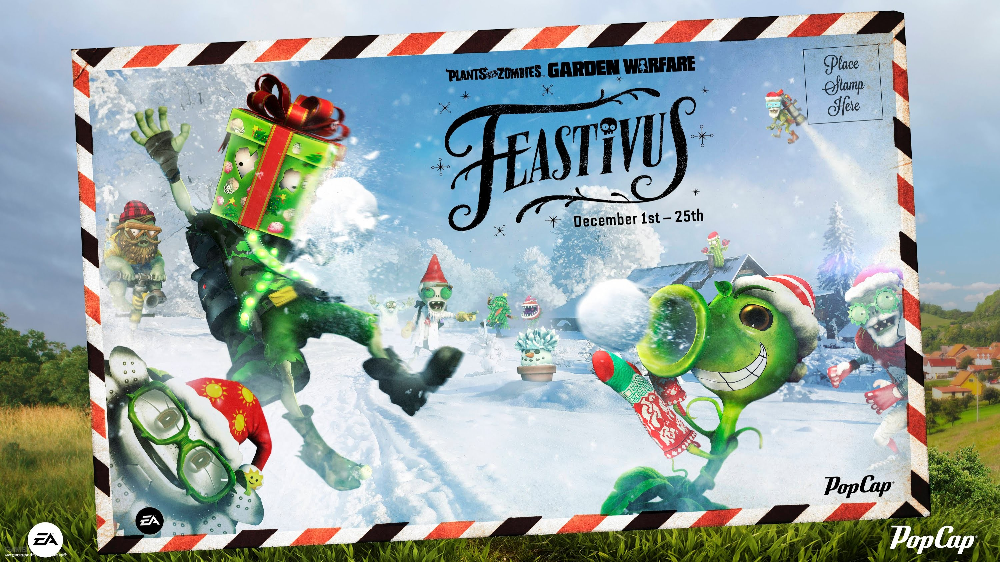

Vamos a enseñaros una serie de fotos de como va nuestros avances del juego:
| Este es un boceto principal de como sería el mundo del juego, en vez de tener un menu para buscar partida, tendríamos este mapa en el que podremos buscar partida, jugar el modo historia, hacer misiones secundarias o completar minijuegos. Por un lado podemos ver que las plantas y los zombies están cara a cara en este "Patio" el cual será una batalla constante entre ellos, pretendemos que con esto el juego tiene aún más opciones para disfrutarlo y poder hacer algún que otro evento en este patio |  |
|---|---|
|  | Esta es una captura de pantalla de un gameplay, como podemos ver en este caso al héroe planta: Rosa, aprovechemos esta imagen para explicar la interfaz. Podemos ver abajo a la izquierda la cantidad de salud del personaje, su nivel y su barra de experiencia, abajo a la derecha tenemos las habilidades del personaje, cada uno contará con 3, abajo en el centro veremos las posibles interracciones. Pasando a la parte de arriba, a la izquierda tendremos el chat de voz, en el centro el marcador de la partida y a la derecha un historial de las eliminaciones recientes de la partida |
| Aquí tenemos un ejemplo básico de cómo podrían ser los eventos en el juego, por ejemplo para navidades tenemos pensado que la nieve invada todos los mapas, haciendo una rivalidad, por ejemplo entre fuego y hielo, haciendo que todas las plantas sean de hielo y todos los zombies de fuego, planteando la temática de que las plantas quieren defender la navidad y los zombies pretenden quemarla |  |

|
Este sera el menu que tendran los jugadores para poder seleccionar el modo de juego, que estaran los siguientes:
|